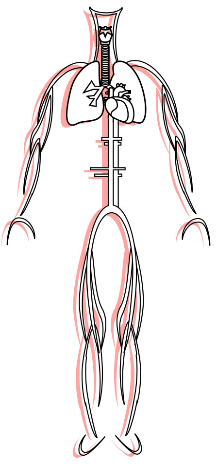

Overview
The circulatory system is composed of the heart and blood vessels. It's functions include transportation, temperature regulation, and fluid balance maintenance. The heart transports blood throughout the human body. The pumped blood and circulatory vessels carry various things around our body such as oxygen, nutrients, waste products, and hormones.
The heart is made up of four chambers: the right and left atrium, as well as the right and left ventricle.
The systemic circuit is a major portion of the circulatory system. It transports oxygenated blood around the body and returns de-oxygenated blood to the heart.
The pulmonary circuit carries blood to the lungs to be oxygenated and then returns back to the heart.